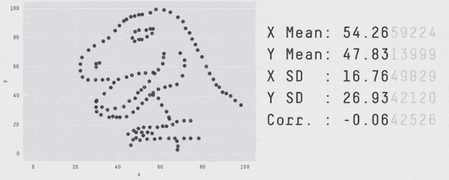
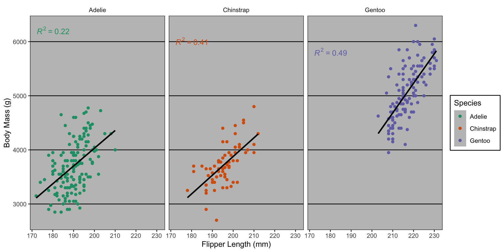
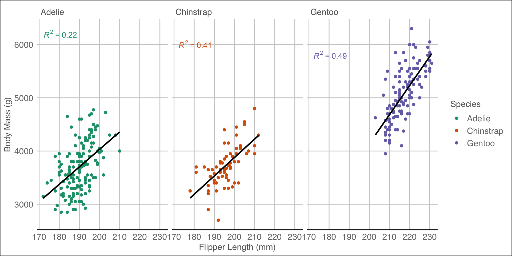
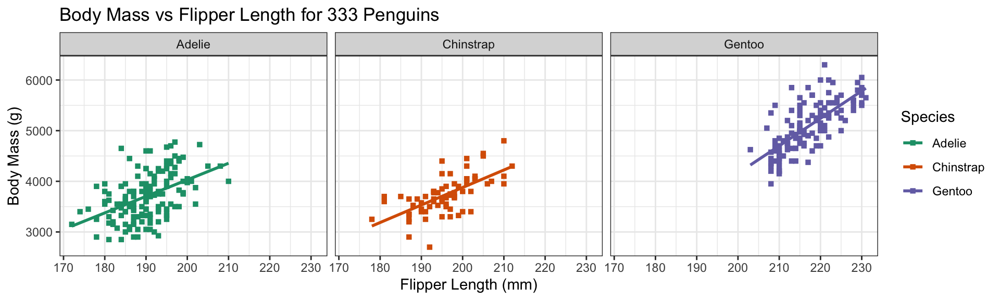
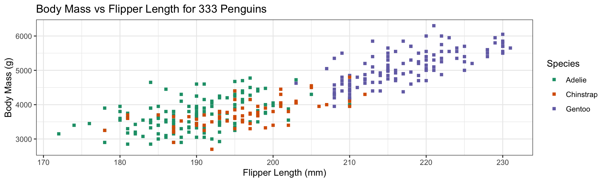
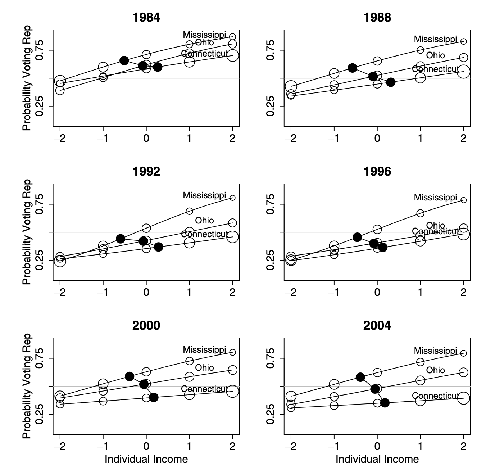
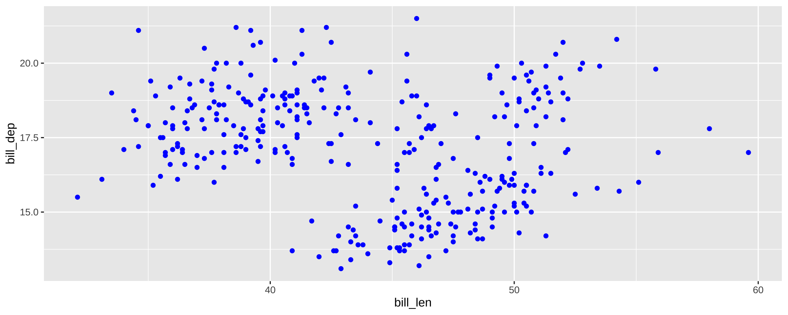
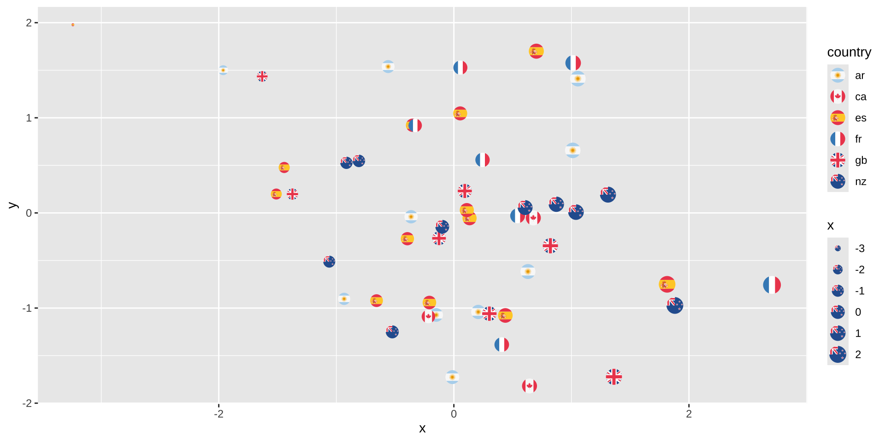

| Date | Time | Details |
|---|---|---|
| 2026-03-22 | 11:59pm ET | Mini-Project Peer Feedback #01 Due |
| 2026-03-26 | 6:00pm ET | Mid-Semester Check-In Slides Due |
| 2026-04-02 | 11:59pm ET | Mid-Semester Teammate Peer Evaluations Due |
| 2026-04-02 | NA | Classes Cancelled (Spring Break – Week 1) |
| 2026-04-03 | 11:59pm ET | Mini-Project #02 Due |
| 2026-04-09 | NA | Classes Cancelled (Spring Break – Week 2) |
| 2026-04-12 | 11:59pm ET | Mini-Project Peer Feedback #02 Due |
| 2026-04-16 | 6:00pm ET | Pre-Assignment #09 Due |
Software Tools for Data Analysis
STA 9750
Michael Weylandt
Week 7 – Thursday 2026-03-19
Last Updated: 2026-03-16
STA 9750 Week 7
Today: Lecture #06: Plotting with ggplot2
These slides can be found online at:
In-class activities (if any) can be found at:
Upcoming TODO
Upcoming student responsibilities:
STA 9750 Week 7
Today: Lecture #06: Plotting with ggplot2
- Communicating Results (
quarto) ✅ RBasics ✅- Data Manipulation in
R✅ - Data Visualization in
R⬅️- Static Plots ⬅️
- Interactivity, Maps, Animated Plots
- Getting Data into
R - Statistical Modeling in
R
Schedule Notes
Upcoming schedule is a bit confusing:
- Today: Static Plots
- Next Week: Mid-Semester Check-In Presentations
- Two Weeks of Spring Break (April 2 and 9)
- April 16: Data Import Part 1
- Tuesday April 21: Make-Up Class (Advanced Plotting)
- April 23: Data Import Part 2
Today
Today
- Course Administration
- MP#02 Advice
- Mid-Semester Check-In Advice
- Warm-Up Exercises
- Plotting: Principles for Visual Storytelling
- Introduction to
ggplot2 - Plotting FAQs
- Wrap-Up
Special Visitor
Prof. Ann Brandwein is joining us today

Advisor for MS Stat and MS QMM. If you don’t already know Prof. B, you should!
Under CUNY Procedures, untenured faculty (like me!) are observed and evaluated once a semester.
You don’t need to do anything different.
- Prof. Brandwein will be assigned to a random breakout room. (Be nice 😀!)
Course Administration
Mini-Project #02
MP#02 - How Do You Do ‘You Do You’?
Due 2026-04-03 at 11:59pm ET
- GitHub post (used for peer feedback) AND Brightspace
- Start early to avoid Git issues
Pay attention to the rubric
- Writing and presentation are about 50% of your grade
- You now receive a grade (no automatic 10/10 on data visualization)
- Evaluated on rigor and thoughtfulness
- Use what you learned from MP#01
Mini-Project #02
Rare issues downloading BLS-ATUS data files (especially on Windows)
- Hopefully addressed already
- My code only downloads files once
- If files are corrupted, please delete and try again
- Post on Piazza for help debugging

Mini-Project #02
From WSJ 2016:
(Remember, you get free WSJ subscription as a Baruch student)
Mini-Project #02
Key Question:
- What do “people like you” spend their time on?
Analytical Techniques:
- Use of microdata and survey weights
- Translating informal concepts (“like you”) to quantitative measures
Tools:
joins to combine Census and BLS datadplyrto standardize and explore high/low trends (alsoquantile&cut)- Visualization to find outliers and trends (today!)
Mini-Project #02
Four data files (use my code!):
- Activity Data File: self-reported time spent on different activities
- Respondent File: demographic information
- Roster File: who else was present? (Least useful)
- Activity Codes: Translating IDs into actual activities (e.g., 070101 = grocery shopping)
MP#02 Files
Activity Data File
Rows: 4,880,021
Columns: 29
$ TUCASEID <dbl> 2.00301e+13, 2.00301e+13, 2.00301e+13, 2.00301e+13, 2.003…
$ TUACTIVITY_N <dbl> 1, 2, 3, 4, 5, 6, 7, 8, 9, 1, 2, 3, 4, 5, 6, 7, 8, 9, 10,…
$ TUACTDUR24 <dbl> 60, 30, 600, 150, 5, 175, 270, 10, 140, 180, 60, 60, 60, …
$ TUCC5 <dbl> -1, -1, -1, -1, -1, -1, -1, -1, -1, -1, -1, -1, -1, -1, -…
$ TUCC5B <dbl> -1, -1, -1, -1, -1, -1, -1, -1, -1, -1, -1, -1, -1, -1, -…
$ TRTCCTOT_LN <dbl> -1, -1, -1, -1, -1, -1, -1, -1, -1, -1, -1, -1, -1, -1, -…
$ TRTCC_LN <dbl> -1, -1, -1, -1, -1, -1, -1, -1, -1, -1, 60, -1, -1, 10, -…
$ TRTCOC_LN <dbl> -1, -1, -1, -1, -1, -1, -1, -1, -1, -1, -1, -1, -1, -1, -…
$ TUSTARTTIM <time> 04:00:00, 05:00:00, 05:30:00, 15:30:00, 18:00:00, 18:05:…
$ TUSTOPTIME <time> 05:00:00, 05:30:00, 15:30:00, 18:00:00, 18:05:00, 21:00:…
$ TRCODEP <chr> "130124", "010201", "010101", "120303", "110101", "120303…
$ TRTIER1P <chr> "13", "01", "01", "12", "11", "12", "01", "01", "13", "01…
$ TRTIER2P <chr> "1301", "0102", "0101", "1203", "1101", "1203", "0101", "…
$ TUCC8 <dbl> 97, 0, 0, 0, 0, 0, 0, 0, 0, 97, 0, 0, 0, 0, 0, 0, 0, 0, 0…
$ TUCUMDUR <dbl> 60, 90, 690, 840, 845, 1020, 1290, 1300, 1470, 180, 240, …
$ TUCUMDUR24 <dbl> 60, 90, 690, 840, 845, 1020, 1290, 1300, 1440, 180, 240, …
$ TUACTDUR <dbl> 60, 30, 600, 150, 5, 175, 270, 10, 170, 180, 60, 60, 60, …
$ TR_03CC57 <dbl> -1, -1, -1, -1, -1, -1, -1, -1, -1, -1, 1, -1, 1, 1, -1, …
$ TRTO_LN <dbl> -1, -1, -1, -1, -1, -1, -1, -1, -1, -1, -1, -1, -1, -1, -…
$ TRTONHH_LN <dbl> -1, -1, -1, -1, -1, -1, -1, -1, -1, -1, -1, -1, -1, -1, -…
$ TRTOHH_LN <dbl> -1, -1, -1, -1, -1, -1, -1, -1, -1, -1, -1, -1, -1, -1, -…
$ TRTHH_LN <dbl> -1, -1, -1, -1, -1, -1, -1, -1, -1, -1, -1, -1, -1, -1, -…
$ TRTNOHH_LN <dbl> -1, -1, -1, -1, -1, -1, -1, -1, -1, -1, -1, -1, -1, -1, -…
$ TEWHERE <dbl> 9, -1, -1, 1, 1, 1, -1, -1, 9, -1, 1, -1, 1, 12, 3, 12, 1…
$ TUCC7 <dbl> -1, -1, -1, -1, -1, -1, -1, -1, -1, -1, -1, -1, -1, -1, -…
$ TRWBELIG <dbl> -1, -1, -1, -1, -1, -1, -1, -1, -1, -1, -1, -1, -1, -1, -…
$ TRTEC_LN <dbl> -1, -1, -1, -1, -1, -1, -1, -1, -1, -1, -1, -1, -1, -1, -…
$ TUEC24 <dbl> -1, -1, -1, -1, -1, -1, -1, -1, -1, -1, -1, -1, -1, -1, -…
$ TUDURSTOP <dbl> -1, -1, -1, -1, -1, -1, -1, -1, -1, -1, -1, -1, -1, -1, -…MP#02 Files
Respondent Data File
Rows: 252,808
Columns: 133
$ TUCASEID <dbl> 2.00301e+13, 2.00301e+13, 2.00301e+13, 2.00301e+13, 2.003…
$ TULINENO <dbl> 1, 1, 1, 1, 1, 1, 1, 1, 1, 1, 1, 1, 1, 1, 1, 1, 1, 1, 1, …
$ TESPUHRS <dbl> -1, 50, -1, 40, -1, 40, 50, -1, 40, -1, 40, -1, 40, -1, -…
$ TRDTIND1 <dbl> 40, 16, 43, -1, 42, 40, 43, 41, 34, 41, 22, 48, 46, -1, 2…
$ TRDTOCC1 <dbl> 8, 16, 15, -1, 10, 8, 15, 11, 17, 11, 16, 17, 16, -1, 15,…
$ TRERNHLY <dbl> 2200, -1, 1250, -1, -1, -1, -1, 950, 1400, 1200, -1, 742,…
$ TRERNUPD <dbl> 1, 1, 0, -1, -1, 1, -1, 0, 0, 0, 0, 0, 0, -1, 0, 0, -1, 1…
$ TRHERNAL <dbl> 1, -1, 0, -1, -1, -1, -1, 0, 0, 0, -1, 0, 0, -1, -1, -1, …
$ TRHHCHILD <dbl> 2, 1, 2, 1, 1, 1, 1, 1, 1, 1, 1, 1, 1, 1, 1, 1, 2, 2, 2, …
$ TRIMIND1 <dbl> 15, 5, 16, -1, 16, 15, 16, 16, 12, 16, 7, 20, 18, -1, 7, …
$ TRMJIND1 <dbl> 10, 4, 10, -1, 10, 10, 10, 10, 8, 10, 5, 12, 11, -1, 5, 1…
$ TRMJOCC1 <dbl> 2, 4, 3, -1, 2, 2, 3, 3, 5, 3, 4, 5, 4, -1, 3, 2, -1, 2, …
$ TRMJOCGR <dbl> 1, 3, 2, -1, 1, 1, 2, 2, 3, 2, 3, 3, 3, -1, 2, 1, -1, 1, …
$ TRNHHCHILD <dbl> 2, 2, 2, 2, 2, 2, 2, 2, 2, 2, 2, 2, 2, 2, 2, 2, 2, 2, 2, …
$ TRNUMHOU <dbl> 3, 4, 2, 4, 4, 3, 3, 5, 5, 6, 3, 2, 3, 2, 3, 4, 2, 1, 2, …
$ TROHHCHILD <dbl> 2, 1, 2, 1, 1, 2, 1, 2, 1, 1, 1, 1, 1, 2, 1, 1, 2, 2, 2, …
$ TRTALONE <dbl> 525, 0, 475, 350, 140, 170, 132, 105, 0, 626, 30, 44, 281…
$ TRTCC <dbl> 0, 170, 0, 715, 0, 400, 127, 0, 750, 227, 0, 660, 0, 0, 1…
$ TRTHHFAMILY <dbl> 5, 760, 60, 335, 280, 0, 237, 90, 720, 251, 120, 731, 143…
$ TRTNOCHILD <dbl> 0, 530, 0, 0, 85, 470, 6, 90, 0, 0, 19, 766, 54, 0, 0, 55…
$ TRTNOHH <dbl> -1, -1, -1, -1, -1, -1, -1, -1, -1, -1, -1, -1, -1, -1, -…
$ TRTO <dbl> -1, -1, -1, -1, -1, -1, -1, -1, -1, -1, -1, -1, -1, -1, -…
$ TRTOHH <dbl> -1, -1, -1, -1, -1, -1, -1, -1, -1, -1, -1, -1, -1, -1, -…
$ TRTOHHCHILD <dbl> 0, 760, 0, 70, 280, 0, 227, 0, 720, 251, 120, 731, 131, 0…
$ TRTONHH <dbl> -1, -1, -1, -1, -1, -1, -1, -1, -1, -1, -1, -1, -1, -1, -…
$ TRTONHHCHILD <dbl> 0, 0, 0, 0, 0, 0, 0, 0, 0, 0, 0, 0, 0, 0, 0, 0, 0, 0, 0, …
$ TRTSPONLY <dbl> 5, 0, 60, 265, 0, 0, 10, 0, 0, 0, 0, 0, 12, 0, 53, 0, 570…
$ TRTSPOUSE <dbl> 5, 760, 60, 305, 155, 0, 138, 0, 360, 20, 120, 0, 82, 0, …
$ TRTUNMPART <dbl> 0, 0, 0, 0, 0, 175, 0, 0, 0, 0, 0, 0, 0, 0, 0, 0, 0, 0, 0…
$ TRWERNAL <dbl> 1, 1, 0, -1, -1, 1, -1, 0, 0, 0, 0, 0, 0, -1, 0, 0, -1, 0…
$ TTHR <dbl> 0, 0, 0, 0, 0, 0, 0, 0, 0, 0, 0, 0, 0, 0, 0, 0, 0, 0, 0, …
$ TTOT <dbl> 0, 0, 0, 0, 0, 0, 0, 0, 0, 0, 0, 0, 0, 0, 0, 0, 0, 0, 0, …
$ TTWK <dbl> 0, 0, 0, 0, 0, 0, 0, 0, 0, 0, 0, 0, 0, 0, 0, 0, 0, 0, 0, …
$ TUABSOT <dbl> 1, -1, 1, 2, -1, 1, -1, -1, -1, -1, -1, -1, -1, 2, -1, -1…
$ TUYEAR <dbl> 2003, 2003, 2003, 2003, 2003, 2003, 2003, 2003, 2003, 200…
$ TEABSRSN <dbl> 4, -1, 4, -1, -1, 4, -1, -1, -1, -1, -1, -1, -1, -1, -1, …
$ TEERN <dbl> -1, -1, -1, -1, -1, -1, -1, -1, -1, -1, -1, -1, -1, -1, -…
$ TEERNH1O <dbl> 2200, -1, -1, -1, -1, -1, -1, 950, 1400, -1, -1, 742, 750…
$ TEERNH2 <dbl> -1, -1, 1250, -1, -1, -1, -1, -1, -1, 1200, -1, -1, -1, -…
$ TEERNHRO <dbl> 30, -1, -1, -1, -1, -1, -1, 35, 45, -1, -1, 25, 30, -1, -…
$ TEERNHRY <dbl> 1, 2, 1, -1, -1, 2, -1, 1, 1, 1, 2, 1, 1, -1, 2, 2, -1, 2…
$ TEERNPER <dbl> 1, 2, 3, -1, -1, 2, -1, 1, 1, 3, 2, 1, 1, -1, 6, 6, -1, 2…
$ TEERNRT <dbl> -1, 2, 1, -1, -1, 2, -1, -1, -1, 1, 2, -1, -1, -1, 2, 2, …
$ TEERNUOT <dbl> 2, 1, 2, -1, -1, 2, -1, 2, 2, 2, 2, 2, 2, -1, 2, 2, -1, 2…
$ TEERNWKP <dbl> -1, -1, -1, -1, -1, -1, -1, -1, -1, -1, -1, -1, -1, -1, 5…
$ TEHRFTPT <dbl> -1, -1, -1, -1, -1, -1, -1, -1, -1, -1, -1, -1, -1, -1, -…
$ TEHRUSL1 <dbl> 30, 30, 12, -1, 80, 40, 52, 40, 40, 40, 57, 35, 30, -1, 3…
$ TEHRUSL2 <dbl> -1, -1, -1, -1, -1, -1, -1, -1, -1, -1, -1, -1, -1, -1, -…
$ TEIO1COW <dbl> 3, 4, 5, -1, 6, 3, 7, 4, 4, 4, 4, 4, 4, -1, 4, 3, -1, 4, …
$ TEIO1ICD <dbl> 7860, 1690, 8470, -1, 7970, 7860, 8470, 8190, 7070, 8190,…
$ TEIO1OCD <dbl> 2310, 4850, 4600, -1, 3060, 2300, 4600, 3600, 5120, 3600,…
$ TELAYAVL <dbl> -1, -1, -1, -1, -1, -1, -1, -1, -1, -1, -1, -1, -1, -1, -…
$ TELAYLK <dbl> -1, -1, -1, -1, -1, -1, -1, -1, -1, -1, -1, -1, -1, -1, -…
$ TELKAVL <dbl> -1, -1, -1, 1, -1, -1, -1, -1, -1, -1, -1, -1, -1, -1, -1…
$ TELKM1 <dbl> -1, -1, -1, 6, -1, -1, -1, -1, -1, -1, -1, -1, -1, -1, -1…
$ TERET1 <dbl> -1, -1, -1, -1, -1, -1, -1, -1, -1, -1, -1, -1, -1, -1, -…
$ TESCHFT <dbl> -1, -1, -1, -1, -1, 2, -1, -1, -1, -1, -1, -1, -1, 1, -1,…
$ TUBUS <dbl> 2, 1, 2, 2, 1, 2, 1, 2, 2, 2, 2, 2, 2, 2, 2, 1, 2, 2, 2, …
$ TUBUS1 <dbl> -1, -1, -1, -1, -1, -1, -1, -1, -1, -1, -1, -1, -1, -1, -…
$ TUBUS2OT <dbl> -1, -1, -1, -1, -1, -1, -1, -1, -1, -1, -1, -1, -1, -1, -…
$ TUBUSL1 <dbl> -1, -1, -1, -1, -1, -1, -1, -1, -1, -1, -1, -1, -1, -1, -…
$ TUBUSL2 <dbl> -1, 2, -1, -1, -1, -1, -1, -1, -1, -1, -1, -1, -1, -1, -1…
$ TUBUSL3 <dbl> -1, -1, -1, -1, -1, -1, -1, -1, -1, -1, -1, -1, -1, -1, -…
$ TUBUSL4 <dbl> -1, -1, -1, -1, -1, -1, -1, -1, -1, -1, -1, -1, -1, -1, -…
$ TUCC2 <chr> "-1", "07:00:00", "-1", "09:00:00", "-1", "08:10:00", "06…
$ TUCC4 <chr> "-1", "21:00:00", "-1", "01:00:00", "-1", "20:20:00", "21…
$ TUFWK <dbl> 2, 1, 2, 2, 1, 2, 1, 1, 1, 1, 1, 1, 1, 2, 1, 1, 3, 1, 2, …
$ TUIO1MFG <dbl> -1, -1, -1, -1, -1, -1, -1, -1, -1, -1, -1, -1, -1, -1, -…
$ TUIODP1 <dbl> 1, 1, 1, -1, 1, 1, 1, 1, 1, 1, 1, 1, 1, -1, 1, 1, -1, 2, …
$ TUIODP2 <dbl> 2, 2, 2, -1, 2, 2, 2, 2, 2, 2, 2, 2, 2, -1, 2, 2, -1, -1,…
$ TUIODP3 <dbl> 1, 1, 1, -1, 1, 1, 1, 1, 1, 1, 1, 1, 1, -1, 1, 1, -1, -1,…
$ TULAY <dbl> -1, -1, -1, 2, -1, -1, -1, -1, -1, -1, -1, -1, -1, 2, -1,…
$ TULAY6M <dbl> -1, -1, -1, -1, -1, -1, -1, -1, -1, -1, -1, -1, -1, -1, -…
$ TULAYAVR <dbl> -1, -1, -1, -1, -1, -1, -1, -1, -1, -1, -1, -1, -1, -1, -…
$ TULAYDT <dbl> -1, -1, -1, -1, -1, -1, -1, -1, -1, -1, -1, -1, -1, -1, -…
$ TULK <dbl> -1, -1, -1, 1, -1, -1, -1, -1, -1, -1, -1, -1, -1, 2, -1,…
$ TULKAVR <dbl> -1, -1, -1, -1, -1, -1, -1, -1, -1, -1, -1, -1, -1, -1, -…
$ TULKDK1 <dbl> -1, -1, -1, -1, -1, -1, -1, -1, -1, -1, -1, -1, -1, -1, -…
$ TULKDK2 <dbl> -1, -1, -1, -1, -1, -1, -1, -1, -1, -1, -1, -1, -1, -1, -…
$ TULKDK3 <dbl> -1, -1, -1, -1, -1, -1, -1, -1, -1, -1, -1, -1, -1, -1, -…
$ TULKDK4 <dbl> -1, -1, -1, -1, -1, -1, -1, -1, -1, -1, -1, -1, -1, -1, -…
$ TULKM2 <dbl> -1, -1, -1, 13, -1, -1, -1, -1, -1, -1, -1, -1, -1, -1, -…
$ TULKM3 <dbl> -1, -1, -1, 97, -1, -1, -1, -1, -1, -1, -1, -1, -1, -1, -…
$ TULKM4 <dbl> -1, -1, -1, -1, -1, -1, -1, -1, -1, -1, -1, -1, -1, -1, -…
$ TULKM5 <dbl> -1, -1, -1, -1, -1, -1, -1, -1, -1, -1, -1, -1, -1, -1, -…
$ TULKM6 <dbl> -1, -1, -1, -1, -1, -1, -1, -1, -1, -1, -1, -1, -1, -1, -…
$ TULKPS1 <dbl> -1, -1, -1, -1, -1, -1, -1, -1, -1, -1, -1, -1, -1, -1, -…
$ TULKPS2 <dbl> -1, -1, -1, -1, -1, -1, -1, -1, -1, -1, -1, -1, -1, -1, -…
$ TULKPS3 <dbl> -1, -1, -1, -1, -1, -1, -1, -1, -1, -1, -1, -1, -1, -1, -…
$ TULKPS4 <dbl> -1, -1, -1, -1, -1, -1, -1, -1, -1, -1, -1, -1, -1, -1, -…
$ TUMONTH <dbl> 1, 1, 1, 1, 1, 1, 1, 1, 1, 1, 1, 1, 1, 1, 1, 1, 1, 1, 1, …
$ TRTCCC <dbl> 0, 0, 0, 0, 0, 0, 0, 0, 0, 0, 0, 0, 0, 0, 30, 0, 0, 185, …
$ TRTCCTOT <dbl> 0, 170, 0, 715, 0, 400, 127, 0, 750, 227, 0, 840, 0, 0, 1…
$ TRTCHILD <dbl> 0, 760, 0, 70, 280, 470, 229, 90, 720, 251, 139, 766, 131…
$ TRTCOC <dbl> 0, 0, 0, 0, 0, 0, 0, 0, 0, 0, 0, 790, 0, 0, 0, 0, 0, 0, 6…
$ TRTFAMILY <dbl> 5, 760, 60, 335, 280, 0, 237, 90, 720, 251, 120, 781, 143…
$ TRTFRIEND <dbl> 0, 0, 265, 0, 0, 0, 0, 225, 0, 42, 0, 0, 0, 600, 0, 0, 0,…
$ TRTHH <dbl> -1, -1, -1, -1, -1, -1, -1, -1, -1, -1, -1, -1, -1, -1, -…
$ TUDIS2 <dbl> -1, -1, -1, -1, -1, -1, -1, -1, -1, -1, -1, -1, -1, -1, -…
$ TURETOT <dbl> -1, -1, -1, -1, -1, -1, -1, -1, -1, -1, -1, -1, -1, -1, -…
$ TUSPABS <dbl> 3, -1, 2, -1, 2, -1, -1, -1, -1, 2, -1, -1, -1, -1, 2, 2,…
$ TUSPUSFT <dbl> -1, -1, -1, -1, -1, -1, -1, -1, -1, -1, -1, -1, -1, -1, -…
$ TUSPWK <dbl> 2, 1, 2, 1, 2, 1, 1, -1, 1, 2, 1, -1, 1, -1, 2, 2, 3, -1,…
$ TREMODR <dbl> -1, -1, -1, -1, -1, -1, -1, -1, -1, -1, -1, -1, -1, -1, -…
$ TUCC9 <dbl> -1, -1, -1, -1, -1, -1, -1, -1, -1, -1, -1, 1, -1, -1, -1…
$ TUDIARYDATE <dbl> 20030103, 20030104, 20030104, 20030102, 20030109, 2003010…
$ TUDIS <dbl> -1, -1, -1, -1, -1, -1, -1, -1, -1, -1, -1, -1, -1, -1, -…
$ TUDIS1 <dbl> -1, -1, -1, -1, -1, -1, -1, -1, -1, -1, -1, -1, -1, -1, -…
$ TRCHILDNUM <dbl> 0, 2, 0, 2, 2, 1, 1, 1, 3, 4, 1, 1, 1, 1, 1, 2, 0, 0, 0, …
$ TUDIARYDAY <dbl> 6, 7, 7, 5, 5, 5, 2, 3, 7, 5, 7, 1, 7, 4, 7, 4, 7, 7, 6, …
$ TRERNWA <dbl> 66000, 20000, 20000, -1, -1, 57600, -1, 33250, 63000, 450…
$ TRHOLIDAY <dbl> 0, 0, 0, 0, 0, 0, 0, 0, 0, 0, 0, 0, 0, 1, 0, 1, 0, 0, 0, …
$ TRSPFTPT <dbl> -1, 1, -1, 1, -1, 1, 1, -1, 1, -1, 1, -1, 1, -1, -1, -1, …
$ TRSPPRES <dbl> 1, 1, 1, 1, 1, 2, 1, 3, 1, 1, 1, 3, 1, 3, 1, 1, 1, 3, 1, …
$ TRDPFTPT <dbl> 2, 2, 2, -1, 1, 1, 1, 1, 1, 1, 1, 1, 2, -1, 1, 1, -1, 1, …
$ TUFNWGTP <dbl> 8155462.7, 1735322.5, 3830527.5, 6622023.0, 3068387.3, 34…
$ TESPEMPNOT <dbl> 2, 1, 2, 1, 2, 1, 1, -1, 1, 2, 1, -1, 1, -1, 2, 2, 2, -1,…
$ TESCHLVL <dbl> -1, -1, -1, -1, -1, 2, -1, -1, -1, -1, -1, -1, -1, 1, -1,…
$ TESCHENR <dbl> -1, 2, 2, 2, -1, 1, 2, 2, 2, 2, 2, 2, 2, 1, 2, 2, -1, 2, …
$ TEMJOT <dbl> 2, 2, 2, -1, 2, 2, 2, 2, 2, 2, 2, 2, 2, -1, 2, 1, -1, 1, …
$ TELFS <dbl> 2, 1, 2, 4, 1, 2, 1, 1, 1, 1, 1, 1, 1, 5, 1, 1, 5, 1, 5, …
$ TEHRUSLT <dbl> 30, 30, 12, -1, 80, 40, 52, 40, 40, 40, 57, 35, 30, -1, 3…
$ TRYHHCHILD <dbl> -1, 0, -1, 9, 14, 2, 9, 14, 3, 4, 4, 7, 14, 17, 2, 4, -1,…
$ TRWBMODR <dbl> -1, -1, -1, -1, -1, -1, -1, -1, -1, -1, -1, -1, -1, -1, -…
$ TRTALONE_WK <dbl> -1, -1, -1, -1, -1, -1, -1, -1, -1, -1, -1, -1, -1, -1, -…
$ TRTCCC_WK <dbl> -1, -1, -1, -1, -1, -1, -1, -1, -1, -1, -1, -1, -1, -1, -…
$ TRLVMODR <dbl> -1, -1, -1, -1, -1, -1, -1, -1, -1, -1, -1, -1, -1, -1, -…
$ TRTEC <dbl> -1, -1, -1, -1, -1, -1, -1, -1, -1, -1, -1, -1, -1, -1, -…
$ TUECYTD <dbl> -1, -1, -1, -1, -1, -1, -1, -1, -1, -1, -1, -1, -1, -1, -…
$ TUELDER <dbl> -1, -1, -1, -1, -1, -1, -1, -1, -1, -1, -1, -1, -1, -1, -…
$ TUELFREQ <dbl> -1, -1, -1, -1, -1, -1, -1, -1, -1, -1, -1, -1, -1, -1, -…
$ TUELNUM <dbl> -1, -1, -1, -1, -1, -1, -1, -1, -1, -1, -1, -1, -1, -1, -…
$ TU20FWGT <dbl> -1, -1, -1, -1, -1, -1, -1, -1, -1, -1, -1, -1, -1, -1, -…MP#02 Files
Roster Data File
Rows: 687,357
Columns: 5
$ TUCASEID <dbl> 2.00301e+13, 2.00301e+13, 2.00301e+13, 2.00301e+13, 2.00301e+…
$ TULINENO <dbl> 1, 2, 3, 1, 2, 3, 4, 1, 2, 1, 2, 3, 4, 1, 2, 3, 4, 1, 2, 3, 1…
$ TERRP <dbl> 18, 20, 22, 18, 20, 22, 22, 18, 20, 18, 20, 22, 22, 18, 20, 2…
$ TEAGE <dbl> 60, 72, 37, 41, 42, 3, 0, 26, 35, 36, 39, 11, 9, 51, 50, 14, …
$ TESEX <dbl> 1, 2, 2, 2, 1, 1, 2, 2, 1, 2, 1, 2, 2, 1, 2, 2, 1, 2, 1, 2, 2…MP#02 Files
Activity Codes File
Rows: 477
Columns: 6
$ code_level1 <chr> "010000", "010000", "010000", "010000", "010000", "010000"…
$ code_level2 <chr> "010100", "010100", "010100", "010200", "010200", "010300"…
$ code_level3 <chr> "010101", "010102", "010199", "010201", "010299", "010301"…
$ task_level1 <chr> "Personal Care", "Personal Care", "Personal Care", "Person…
$ task_level2 <chr> "Sleeping", "Sleeping", "Sleeping", "Grooming", "Grooming"…
$ task_level3 <chr> "Sleeping", "Sleeplessness", "Other Sleeping", "Washing, d…Mini-Project #01
Peer Feedback Period
- Run
mp_pf_perform(N=1)to walk through prompts - See examples of good and bad feedback in last week’s slides
- Submit
bspffile on Brightspace
Reminder: New peer feedback system, so please contact me with any questions
Mid-Semester Check-In
Mid-Semester Check-In Presentations
- Overarching Question
- Data Sources
- Quality
- Suitability
- Specific Questions
- Prior Art
- Challenges
See Project Instructions for more details and rubric
Data Sources
When using ‘found’ data, two important questions to ask:
- Quality: Does the data do what it claims to?
- Exhaustiveness, sampling error, sampling bias, missingness
- Suitability: Does the data do what you need it to?
- Right ‘unit of analysis’, construct alignment
Prior Art
Context and Novelty:
- What else have people said on your topic?
- What is missing?
- What do you have to add to this conversation? (Novelty)
- New data set, new way of measuring, new style of analysis
A research project is not just summarization of other work: how can you contribute something new?
Project Advice
General Advice:
- Work on as small a scale as possible
- Leave room to demonstrate your coding skill: if you can’t
demonstrate the skills of this class, your SQ may be too small - Plan how to integrate your findings: if you find 5 factors are all correlated with response, how can you identify which ones are most important?
After presentations: 100% optional intro to SQL
Course Support
- Synchronous
- MW Office Hours 2x / week:
- Wednesdays (In Person) + Thursdays (Zoom) 5pm
- No OH over Spring Break; extra OH on ‘make-up class’ day
- MW Office Hours 2x / week:
- Asynchronous: Piazza (\(<1\) hour average response time)
Piazza response time is an average, not a guarantee
See Week 02 Slides for advice on asking good questions - Good questions get faster answers
Ask early for help with MPs
Review Exercise
Global Temperature Anomaly
CDIAC estimates of global temperature
- Global Mean Temperature Anomaly (difference from baseline)
- This is the “2°” reference of the 2015 Paris Climate Accords
cdiac data in CVXR package or via my GitHub:
# A tibble: 166 × 14
year jan feb mar apr may jun jul aug sep oct
<dbl> <dbl> <dbl> <dbl> <dbl> <dbl> <dbl> <dbl> <dbl> <dbl> <dbl>
1 1850 -0.702 -0.284 -0.732 -0.57 -0.325 -0.213 -0.128 -0.233 -0.444 -0.452
2 1851 -0.303 -0.362 -0.485 -0.445 -0.302 -0.189 -0.215 -0.153 -0.108 -0.063
3 1852 -0.308 -0.477 -0.505 -0.559 -0.209 -0.038 -0.016 -0.195 -0.125 -0.216
4 1853 -0.177 -0.33 -0.318 -0.352 -0.268 -0.179 -0.059 -0.148 -0.409 -0.359
5 1854 -0.36 -0.28 -0.284 -0.349 -0.23 -0.215 -0.228 -0.163 -0.115 -0.188
6 1855 -0.176 -0.4 -0.303 -0.217 -0.336 -0.16 -0.268 -0.159 -0.339 -0.211
7 1856 -0.119 -0.373 -0.513 -0.371 -0.119 -0.288 -0.297 -0.305 -0.459 -0.384
8 1857 -0.512 -0.344 -0.434 -0.646 -0.567 -0.31 -0.544 -0.327 -0.393 -0.467
9 1858 -0.532 -0.707 -0.55 -0.517 -0.651 -0.58 -0.324 -0.28 -0.339 -0.2
10 1859 -0.307 -0.192 -0.334 -0.203 -0.31 -0.25 -0.285 -0.104 -0.575 -0.255
# ℹ 156 more rows
# ℹ 3 more variables: nov <dbl>, dec <dbl>, annual <dbl>Temperature Anomaly

Global Temperature Anomaly
In breakout rooms:
- In what year was the highest annual anomaly observed? The lowest?
- For how many months was 2015 the highest anomaly recorded?
- For how many years did July have the largest anomaly of that year?
See Lab #07 for details.
Aside: Oak Ridge

Calutron Girls

Plotting
Why Visualization?
Why do we visualize data?
- Data exploration and understanding
- Hypothesis generation
- Data communication
- Humans are better at visuals than numbers
- Allow the data to surprise you
Why Visualization?

Same \(\mu_X, \mu_Y, \sigma_X, \sigma_Y, \rho_{XY}, \beta_{Y|X}, \dots\) - OLS can’t distinguish
Why Visualization?
Modeling and visualizing are not sequential:
- Build a model, where does it fail?
- See a pattern, does it hold up in a model / test?
Spot the Problem!
Examples from Viz.WTF:

Spot the Problem!
Examples from Viz.WTF:
 ## Spot the Problem!
## Spot the Problem!
Examples from Viz.WTF:

Spot the Problem!
Examples from Viz.WTF:

Spot the Problem!
Examples from Viz.WTF:

Spot the Problem!
Examples from Viz.WTF:

Spot the Problem!
Examples from Viz.WTF:

Spot the Problem!
Examples from Viz.WTF:

Spot the Problem!
Examples from Viz.WTF:

Spot the Problem!
Examples from Viz.WTF:

Spot the Problem!
Examples from Viz.WTF:

Spot the Problem!
Examples from Viz.WTF:

Spot the Problem!
Examples from Viz.WTF:

Spot the Problem!
BREAKING🚨: Asteroid the size of 14 flamingos has just skimmed past Earth, according to NASA. pic.twitter.com/vfUTk2OAvG
— All day Astronomy (@forallcurious) March 5, 2026
Plotting with ggplot2
ggplot2
ggplot2:
- Grammar of Graphics Ploting, Version 2
- Structured Plotting
- Plotting to express statistical visualization
- Not raw shapes and colors (“graphics primitives”)
- Make it easy to make good visualizations
ggplot2
ggplot2 provides a system (“grammar”) for visualizations:
geom_s: the actual thing to be plotted (points, lines, etc.)aes(aesthetics): mapping of aspects of datascale_s: control mapping from ‘data space’ to ‘graphics space’theme: basic non-data-dependent plot elementsguides: legendsstat_s: transformations of data used to plot (CDF, histogram counts)
ggplot2 - Worked Example
Let’s plot the penguins data. To avoid warnings, use a no-NA version:
ggplot2 - Worked Example
Need to map specific variables to aspects of plots: aes mapping
ggplot2 - Worked Example
Add a geom_ to draw plot elements
ggplot2 - Worked Example
Replace default labels:
ggplot2 - Worked Example
Replace default labels:

- Additional aesthetic (
color) inherited bygeom_point - Automatic identification of categorical (factor) data
ggplot2 - Worked Example
Replace default color scale:

- Override default color scale with
scale_color_brewer - Colors taken from work of Cynthia Brewer (PSU)
- Using a
qualitative palette here because no order to species
ggplot2 - Worked Example
Change theme for non-data elements:

- Default
theme_grey() - Replace by
theme_bw()(Black & White) - Many more themes available
ggplot2 - Worked Example
Override default aesthetic to change shape of points:

- Override default
shapeaesthetic - Provide directly to
geom_point, not viaaessince not data dependent - See ?
scale_shape_discretefor table of values
ggplot2 - Worked Example
Add trend lines with stat_smooth:
ggplot(penguins_ok,
aes(x=flipper_len, y=body_mass, color=species)) +
geom_point(shape=15) +
stat_smooth(method="lm", se=FALSE) +
xlab("Flipper Length (mm)") + ylab("Body Mass (g)") +
ggtitle("Body Mass vs Flipper Length for 333 Penguins") +
scale_color_brewer(name="Species", type="qual", palette=2) +
theme_bw()
stat_s implement transformationsstat_smoothmarks a trend- Specify use of OLS (
lm= linear model) + disable SE shading
ggplot2 - Worked Example
Break data into subplots (“facets”) to avoid over-plotting:
ggplot(penguins_ok,
aes(x=flipper_len, y=body_mass, color=species)) +
geom_point(shape=15) + stat_smooth(method="lm", se=FALSE) +
xlab("Flipper Length (mm)") + ylab("Body Mass (g)") +
ggtitle("Body Mass vs Flipper Length for 333 Penguins") +
scale_color_brewer(name="Species", type="qual", palette=2) +
theme_bw() + facet_wrap(~species)
facet_wrap(split by one grouping) orfacet_grid(show all pairs of groups)group_byof plotting- Called “small multiples”
ggplot2 - Worked Example
Remove redundant legend:
ggplot(penguins_ok,
aes(x=flipper_len, y=body_mass, color=species)) +
geom_point(shape=15) + stat_smooth(method="lm", se=FALSE) +
xlab("Flipper Length (mm)") + ylab("Body Mass (g)") +
ggtitle("Body Mass vs Flipper Length for 333 Penguins") +
scale_color_brewer(name="Species", type="qual", palette=2) +
theme_bw() + facet_wrap(~species) +
guides(color="none")
guidescontrols legends (also viascale_*)- Here redundant with facet labels
ggplot2 Workflow
Take a sad plot and make it better
Start with exploratory graphics:
- Quick and easy
- Find the story you want to tell
- Let the data drive you
- More use of raw data
Iterate to publication-quality graphics:
- Repeat to improve quality
- Tell a story to your reader
- More use of transformations
ggplot2 Workflow
- Many
geom_choices in documentation - Individual pages list required and optional aesthetics
Many ways to get the same result
Practice Exercise
ggplot2 provides diamonds data of ~54K diamonds
- Size, quality, price
- 4 C’s of Diamonds: Color, Cut, Clarity, Carat (Weight)
Return to breakout rooms for Practice Activity #01
Custom Themes
The theme mechanism provides extensive opportunities to customize:
<theme> List of 144
$ line : <ggplot2::element_line>
..@ colour : chr "black"
..@ linewidth : num 0.5
..@ linetype : num 1
..@ lineend : chr "butt"
..@ linejoin : chr "round"
..@ arrow : logi FALSE
..@ arrow.fill : chr "black"
..@ inherit.blank: logi TRUE
$ rect : <ggplot2::element_rect>
..@ fill : chr "white"
..@ colour : chr "black"
..@ linewidth : num 0.5
..@ linetype : num 1
..@ linejoin : chr "round"
..@ inherit.blank: logi TRUE
$ text : <ggplot2::element_text>
..@ family : chr ""
..@ face : chr "plain"
..@ italic : chr NA
..@ fontweight : num NA
..@ fontwidth : num NA
..@ colour : chr "black"
..@ size : num 11
..@ hjust : num 0.5
..@ vjust : num 0.5
..@ angle : num 0
..@ lineheight : num 0.9
..@ margin : <ggplot2::margin> num [1:4] 0 0 0 0
..@ debug : logi FALSE
..@ inherit.blank: logi TRUE
$ title : <ggplot2::element_text>
..@ family : NULL
..@ face : NULL
..@ italic : chr NA
..@ fontweight : num NA
..@ fontwidth : num NA
..@ colour : NULL
..@ size : NULL
..@ hjust : NULL
..@ vjust : NULL
..@ angle : NULL
..@ lineheight : NULL
..@ margin : NULL
..@ debug : NULL
..@ inherit.blank: logi TRUE
$ point : <ggplot2::element_point>
..@ colour : chr "black"
..@ shape : num 19
..@ size : num 1.5
..@ fill : chr "white"
..@ stroke : num 0.5
..@ inherit.blank: logi TRUE
$ polygon : <ggplot2::element_polygon>
..@ fill : chr "white"
..@ colour : chr "black"
..@ linewidth : num 0.5
..@ linetype : num 1
..@ linejoin : chr "round"
..@ inherit.blank: logi TRUE
$ geom : <ggplot2::element_geom>
..@ ink : chr "black"
..@ paper : chr "white"
..@ accent : chr "#3366FF"
..@ linewidth : num 0.5
..@ borderwidth: num 0.5
..@ linetype : int 1
..@ bordertype : int 1
..@ family : chr ""
..@ fontsize : num 3.87
..@ pointsize : num 1.5
..@ pointshape : num 19
..@ colour : NULL
..@ fill : NULL
$ spacing : 'simpleUnit' num 5.5points
..- attr(*, "unit")= int 8
$ margins : <ggplot2::margin> num [1:4] 5.5 5.5 5.5 5.5
$ aspect.ratio : NULL
$ axis.title : NULL
$ axis.title.x : <ggplot2::element_text>
..@ family : NULL
..@ face : NULL
..@ italic : chr NA
..@ fontweight : num NA
..@ fontwidth : num NA
..@ colour : NULL
..@ size : NULL
..@ hjust : NULL
..@ vjust : num 1
..@ angle : NULL
..@ lineheight : NULL
..@ margin : <ggplot2::margin> num [1:4] 2.75 0 0 0
..@ debug : NULL
..@ inherit.blank: logi TRUE
$ axis.title.x.top : <ggplot2::element_text>
..@ family : NULL
..@ face : NULL
..@ italic : chr NA
..@ fontweight : num NA
..@ fontwidth : num NA
..@ colour : NULL
..@ size : NULL
..@ hjust : NULL
..@ vjust : num 0
..@ angle : NULL
..@ lineheight : NULL
..@ margin : <ggplot2::margin> num [1:4] 0 0 2.75 0
..@ debug : NULL
..@ inherit.blank: logi TRUE
$ axis.title.x.bottom : NULL
$ axis.title.y : <ggplot2::element_text>
..@ family : NULL
..@ face : NULL
..@ italic : chr NA
..@ fontweight : num NA
..@ fontwidth : num NA
..@ colour : NULL
..@ size : NULL
..@ hjust : NULL
..@ vjust : num 1
..@ angle : num 90
..@ lineheight : NULL
..@ margin : <ggplot2::margin> num [1:4] 0 2.75 0 0
..@ debug : NULL
..@ inherit.blank: logi TRUE
$ axis.title.y.left : NULL
$ axis.title.y.right : <ggplot2::element_text>
..@ family : NULL
..@ face : NULL
..@ italic : chr NA
..@ fontweight : num NA
..@ fontwidth : num NA
..@ colour : NULL
..@ size : NULL
..@ hjust : NULL
..@ vjust : num 1
..@ angle : num -90
..@ lineheight : NULL
..@ margin : <ggplot2::margin> num [1:4] 0 0 0 2.75
..@ debug : NULL
..@ inherit.blank: logi TRUE
$ axis.text : <ggplot2::element_text>
..@ family : NULL
..@ face : NULL
..@ italic : chr NA
..@ fontweight : num NA
..@ fontwidth : num NA
..@ colour : chr "#4D4D4DFF"
..@ size : 'rel' num 0.8
..@ hjust : NULL
..@ vjust : NULL
..@ angle : NULL
..@ lineheight : NULL
..@ margin : NULL
..@ debug : NULL
..@ inherit.blank: logi TRUE
$ axis.text.x : <ggplot2::element_text>
..@ family : NULL
..@ face : NULL
..@ italic : chr NA
..@ fontweight : num NA
..@ fontwidth : num NA
..@ colour : NULL
..@ size : NULL
..@ hjust : NULL
..@ vjust : num 1
..@ angle : NULL
..@ lineheight : NULL
..@ margin : <ggplot2::margin> num [1:4] 2.2 0 0 0
..@ debug : NULL
..@ inherit.blank: logi TRUE
$ axis.text.x.top : <ggplot2::element_text>
..@ family : NULL
..@ face : NULL
..@ italic : chr NA
..@ fontweight : num NA
..@ fontwidth : num NA
..@ colour : NULL
..@ size : NULL
..@ hjust : NULL
..@ vjust : num 0
..@ angle : NULL
..@ lineheight : NULL
..@ margin : <ggplot2::margin> num [1:4] 0 0 2.2 0
..@ debug : NULL
..@ inherit.blank: logi TRUE
$ axis.text.x.bottom : NULL
$ axis.text.y : <ggplot2::element_text>
..@ family : NULL
..@ face : NULL
..@ italic : chr NA
..@ fontweight : num NA
..@ fontwidth : num NA
..@ colour : NULL
..@ size : NULL
..@ hjust : num 1
..@ vjust : NULL
..@ angle : NULL
..@ lineheight : NULL
..@ margin : <ggplot2::margin> num [1:4] 0 2.2 0 0
..@ debug : NULL
..@ inherit.blank: logi TRUE
$ axis.text.y.left : NULL
$ axis.text.y.right : <ggplot2::element_text>
..@ family : NULL
..@ face : NULL
..@ italic : chr NA
..@ fontweight : num NA
..@ fontwidth : num NA
..@ colour : NULL
..@ size : NULL
..@ hjust : num 0
..@ vjust : NULL
..@ angle : NULL
..@ lineheight : NULL
..@ margin : <ggplot2::margin> num [1:4] 0 0 0 2.2
..@ debug : NULL
..@ inherit.blank: logi TRUE
$ axis.text.theta : NULL
$ axis.text.r : <ggplot2::element_text>
..@ family : NULL
..@ face : NULL
..@ italic : chr NA
..@ fontweight : num NA
..@ fontwidth : num NA
..@ colour : NULL
..@ size : NULL
..@ hjust : num 0.5
..@ vjust : NULL
..@ angle : NULL
..@ lineheight : NULL
..@ margin : <ggplot2::margin> num [1:4] 0 2.2 0 2.2
..@ debug : NULL
..@ inherit.blank: logi TRUE
$ axis.ticks : <ggplot2::element_line>
..@ colour : chr "#333333FF"
..@ linewidth : NULL
..@ linetype : NULL
..@ lineend : NULL
..@ linejoin : NULL
..@ arrow : logi FALSE
..@ arrow.fill : chr "#333333FF"
..@ inherit.blank: logi TRUE
$ axis.ticks.x : NULL
$ axis.ticks.x.top : NULL
$ axis.ticks.x.bottom : NULL
$ axis.ticks.y : NULL
$ axis.ticks.y.left : NULL
$ axis.ticks.y.right : NULL
$ axis.ticks.theta : NULL
$ axis.ticks.r : NULL
$ axis.minor.ticks.x.top : NULL
$ axis.minor.ticks.x.bottom : NULL
$ axis.minor.ticks.y.left : NULL
$ axis.minor.ticks.y.right : NULL
$ axis.minor.ticks.theta : NULL
$ axis.minor.ticks.r : NULL
$ axis.ticks.length : 'rel' num 0.5
$ axis.ticks.length.x : NULL
$ axis.ticks.length.x.top : NULL
$ axis.ticks.length.x.bottom : NULL
$ axis.ticks.length.y : NULL
$ axis.ticks.length.y.left : NULL
$ axis.ticks.length.y.right : NULL
$ axis.ticks.length.theta : NULL
$ axis.ticks.length.r : NULL
$ axis.minor.ticks.length : 'rel' num 0.75
$ axis.minor.ticks.length.x : NULL
$ axis.minor.ticks.length.x.top : NULL
$ axis.minor.ticks.length.x.bottom: NULL
$ axis.minor.ticks.length.y : NULL
$ axis.minor.ticks.length.y.left : NULL
$ axis.minor.ticks.length.y.right : NULL
$ axis.minor.ticks.length.theta : NULL
$ axis.minor.ticks.length.r : NULL
$ axis.line : <ggplot2::element_blank>
$ axis.line.x : NULL
$ axis.line.x.top : NULL
$ axis.line.x.bottom : NULL
$ axis.line.y : NULL
$ axis.line.y.left : NULL
$ axis.line.y.right : NULL
$ axis.line.theta : NULL
$ axis.line.r : NULL
$ legend.background : <ggplot2::element_rect>
..@ fill : NULL
..@ colour : logi NA
..@ linewidth : NULL
..@ linetype : NULL
..@ linejoin : NULL
..@ inherit.blank: logi TRUE
$ legend.margin : NULL
$ legend.spacing : 'rel' num 2
$ legend.spacing.x : NULL
$ legend.spacing.y : NULL
$ legend.key : NULL
$ legend.key.size : 'simpleUnit' num 1.2lines
..- attr(*, "unit")= int 3
$ legend.key.height : NULL
$ legend.key.width : NULL
$ legend.key.spacing : NULL
$ legend.key.spacing.x : NULL
$ legend.key.spacing.y : NULL
$ legend.key.justification : NULL
$ legend.frame : NULL
$ legend.ticks : NULL
$ legend.ticks.length : 'rel' num 0.2
$ legend.axis.line : NULL
$ legend.text : <ggplot2::element_text>
..@ family : NULL
..@ face : NULL
..@ italic : chr NA
..@ fontweight : num NA
..@ fontwidth : num NA
..@ colour : NULL
..@ size : 'rel' num 0.8
..@ hjust : NULL
..@ vjust : NULL
..@ angle : NULL
..@ lineheight : NULL
..@ margin : NULL
..@ debug : NULL
..@ inherit.blank: logi TRUE
$ legend.text.position : NULL
$ legend.title : <ggplot2::element_text>
..@ family : NULL
..@ face : NULL
..@ italic : chr NA
..@ fontweight : num NA
..@ fontwidth : num NA
..@ colour : NULL
..@ size : NULL
..@ hjust : num 0
..@ vjust : NULL
..@ angle : NULL
..@ lineheight : NULL
..@ margin : NULL
..@ debug : NULL
..@ inherit.blank: logi TRUE
$ legend.title.position : NULL
$ legend.position : chr "right"
$ legend.position.inside : NULL
$ legend.direction : NULL
$ legend.byrow : NULL
$ legend.justification : chr "center"
$ legend.justification.top : NULL
$ legend.justification.bottom : NULL
$ legend.justification.left : NULL
$ legend.justification.right : NULL
$ legend.justification.inside : NULL
[list output truncated]
@ complete: logi TRUE
@ validate: logi TRUECustom Themes
From the Tidyverse Blog:
Custom Themes
Best practice:
- Pick a starting theme you like and customize
theme_STARTER() + theme(things.i.change="to.new.values")
Custom Themes
ggplot2 has 8 built-in themes. The ggthemes and ThemePark packages has many more!
Let’s define a basic theme and see how it is rendered in different themes:
Reminder: ggplot2 only displays plot when printed so assign to variable if you want to keep modifying
Custom Themes
Default theme (theme_grey())
Custom Themes
Black-and-White theme (ggplot2::theme_bw()) - MW’s favorite
Custom Themes
Minimal theme (ggplot2::theme_minimal())

Custom Themes
Light theme (ggplot2::theme_light())

Custom Themes
Dark theme (ggplot2::theme_dark())
Custom Themes
Old-school MS Excel theme (ggthemes::theme_excel())
Custom Themes
Google Docs theme (ggthemes::theme_gdocs())
Custom Themes
Economist theme (ggthemes::theme_economist())

Custom Themes
Wall St Journal theme (ggthemes::theme_wsj())
Custom Themes
Edward Tufte theme (ggthemes::theme_tufte())

Custom Themes
Barbie theme (ThemePark::theme_barbie())

Custom Themes
Oppenheimer theme (ThemePark::theme_oppenheimer())
Custom Themes
Simpsons theme (ThemePark::theme_simpsons())

Custom Themes
Spiderman theme (ThemePark::theme_spiderman())

Custom Themes
Game of Thrones theme (ThemePark::theme_gameofthrones())

Custom Themes
Avatar theme (ThemePark::theme_avatar())

Custom Themes
Most of these are silly
- But
ggplot2has a large community you can tap into RGraph Gallery has many worked examples ofggplot2ggplot2Extensions Gallery for ‘add-ins’ providing additional visualizations
Adapt and extend!
Color Palettes
Three types of color palettes:
- Sequential: ordered from 0 to “high”
- Example: rain forecast in different areas
- Diverging: ordered from -X to +Y with meaningful 0 in the middle
- Example: political leaning
- Qualitative: no ordering
- Example: penguin species
Two ways to make a color scale for quantitative variables:
- Binned: \([0, 1)\) light green, \([1, 3)\) medium green; \([3, 5]\) dark green
- Continuous
Color Palettes
I often rely on the work of Cynthia Brewer
- Officially for cartography, but generally useful
- Different (punny)
ggplot2names for different derived scales
Color Palettes
scale_color_brewer() for discrete scales
Color Palettes
scale_color_distiller() for continuous scales
Color Palettes
scale_color_fermenter() for binned scales

Color Palettes
Color Palettes

Color Palettes
“Hard-coding” Colors
scale_color_identity will take color names from a column:

Practice Exercise
Return to the cdiac data from the Warm-Up
- Visualize trends in time series
geom_lineto create line plots
Return to breakout rooms for Practice Activity #02
Simpson’s Paradox
Data Visualization can be used to find counterintuitive trends in data:

Simpson’s Paradox
Overall trend does not need to match trend within groups
ggplot(simpsons_paradox, aes(x=x, y=y, color=group)) +
geom_point() + stat_smooth(method="lm") + facet_grid(~group)
Modeling: ANCOVA or Mixed-Effects Regression
UCB Graduate Admissions
1973: UC Berkeley was concerned about bias in Grad School Admissions
- Higher fraction of men admitted than women
- Bickel, Hammell, O’Connell asked to study
- When they try to find the source of this bias, there is none!
- Each department admits women at a higher rate than men
- Women applied to more selective programs at a higher rate
This phenomenon occurs throughout the social sciences: the best doctors have the worst patient outcomes
BHO note:
Women are shunted by their socialization and education toward fields of graduate study that are generally more crowded, less productive of completed degrees, and less well funded, and that frequently offer poorer professional employment prospects.
Red State Blue State
Red State Blue State
Facts about US politics (c. 2008):
- Rich people vote Republican at higher rates
- Rich states vote Republican at lower rates
- Rich states are rich because they have richer people
How can we reconcile this?
Red State Blue State
Figure from Gelman et al, Q.J.Poli.Sci. 2007.

For more, see this presentation.
Additional Resources
Textbook: R for Data Science, Part II: Visualize
More on data visualization:
- C. Wilke. Fundamentals of Data Visualization
- K. Healy. Data Visualization
- H. Wickham
ggplot2: Elegant Visualizations for Data Analysis
General advice on data science projects:
- B. Yu and R. Barter Veridical Data Science
Plotting FAQs
ggplot2 vs Tableau
- Tableau
- $$$
- IT department automatically integrates with data sources
- Easy, if it does what you want
ggplot2- Free
- Can use arbitrary data sources, with effort
- Flexible / customizable
ggplot2 vs matplotlib
ggplot2- Data visualizations
- Enforces “good practice” via
gg
matplotlib- Scientific visualizations
- More flexible for good or for ill
- Inspired by
Matlabplotting
Closest Python analogue to ggplot2 is seaborn
Why use + instead of |>
ggplot2is older than|>- Per H. Wickham: if
ggplot3ever gets made, will use|> - Unlikely to change: too much code depends on it
Performance
I tried an interactive plot with \(n=132,000\) points, but it brought my computer to a halt. [Ed. Paraphrased]
That’s a lot of plots!!
ggplot2 is itself pretty fast, but it depends on (possibly slow) graphics backends
- Different file types implement graphics differently.
- You should also think about overplotting / pre-processing
We’ll talk more about interactivity next week
Overplotting
Large data sets can lead to overplotting:
- Points “on top of” each other
- Can also occur with “designed” experiments / rounded data
Ways to address:
geom_jittergeom_hex
Overplotting
Jitter: add a bit of random noise so points don’t step on each other

Hexagonal Binning
Little “heatmaps” of counts. Hexagons to avoid weird rounding artifacts

Inside vs. Outside aes()
aes maps data to values. Outside of aes, set constant value
Inside vs. Outside aes()
aes maps data to values. Outside of aes, set constant value

Global vs geom_ specific aes()
- Elements set in
ggplot()apply to entire plot - Elements set in specific
geomapply there only- Override globals
Global vs geom_ specific aes()
- Elements set in
ggplot()apply to entire plot - Elements set in specific
geomapply there only- Override globals
How to Select geoms
Two “modes”
- Exploratory data analysis: Quick, rapid iteration, for your eyes only
- Let the data tell you a story
- Low pre-processing: scatter plots, lines, histograms
- “Publication quality”: Polished, for someone else
- You tell the reader a story
- More processing, more modeling: trends, line segments, ribbons
Order of Layers
Order of layers technically matters, but the effect is small
p1 <- ggplot(penguins_ok, aes(x=bill_len, y=flipper_len)) +
geom_point(color="black") +
stat_smooth(color="blue", method="lm") + ggtitle("Line on points")
p2 <- ggplot(penguins_ok, aes(x=bill_len, y=flipper_len)) +
stat_smooth(color="blue", method="lm") +
geom_point(color="black") + ggtitle("Points on line")
p1 + p2
Order of Layers
Order matters more with theme. Adding a theme_*() will override any theme() customization you did:
stat_poly_line vs stat_smooth
By default stat_smooth fits a generalized additive model (GAM)
ggpmisc::stat_poly_line and stat_poly_eq fit linear models, so they can expose more machinery.
What is a GAM?
- Take 9890 with me (typically Spring semester) to find out!
- Free Course: “GAMs in R” from Noam Ross
Titles and Captions
ggplot() +
labs(title="Title", subtitle="Subtitle", caption="Caption",
tag="Tag", alt="Alt-Text", alt_insight="Alt-Insight")
+ggtitle("text") is just shorthand for +labs(title="text")
Importance of Aesthetics
Perceptually:
- Location > Color > Size > Shape
Humans are better at:
- Length > Area > Volume
When to Facet?
Facets are group_by for plots. Useful for
- Distinguishing intra- vs inter-group trends
- Avoiding overplotting
Twin Axes Plots
How can I implement a dual (twin) axis plot in
ggplot2?
Disfavored. But if you must …
Doesn’t allow arbitrary secondary axes; allows transformed axes (e.g., Celsius and Fahrenheit)
Embedding Images
See the ggimage or ggflags package for images as “points”:
if(!require("ggflags", quiet=TRUE)){
devtools::install_github("jimjam-slam/ggflags");
}
library(ggflags)
d <- data.frame(x=rnorm(50), y=rnorm(50),
country=sample(c("ar","fr", "nz", "gb", "es", "ca"), 50, TRUE),
stringsAsFactors = FALSE)
ggplot(d, aes(x=x, y=y, country=country, size=x)) +
geom_flag() + scale_country()
Embedding Images
See cowplot::draw_image() for image background:
library(cowplot)
p <- ggplot(iris, aes(x = Sepal.Length, fill = Species)) +
geom_density(alpha = 0.7) +
scale_y_continuous(expand = expansion(mult = c(0, 0.05))) +
theme_half_open(12)
logo_file <- system.file("extdata", "logo.png", package = "cowplot")
ggdraw() +
draw_image(
logo_file, scale = .7
) +
draw_plot(p)
Wrap-Up
Review
ggplot2:
- Structured graphics for statistical visualization
- Grammar of Graphics for structured plotting
geom,stat,scale,aes, etc.
- Integrates with
dplyr,tidyrto get into suitable format
Orientation
- Communicating Results (
quarto) ✅ RBasics ✅- Data Manipulation in
R✅ - Data Visualization in
R⬅️ - Getting Data into
R - Statistical Modeling in
R
Life Tip of the Week
Tips for Technical Interviews
Some tips for technical interviews:
Communicate!
Test!
Anticipate the Danger Zone!
Communicate!
Talk / comment throughout a technical interview
- Live interview: vocalize thought process
- Async interview: comment all your choices
Advantages of Communication:
- Allow your interviewer to give “partial credit”
- Most questions aren’t fully-precise, seek clarification
- Share your thought process
Test!
Check your work as you go
- Mistakes that only appear ‘at scale’ are rare
- Test on small data, first terms of sequence, etc.
Easier to check simple output than code
Test!
Suppose you are asked to compute 100th number of a sequence
- Don’t code and submit
- Look at first 5 elements and check by hand
Suppose you are asked to analyze a data set
- Try your code on a small data set first
- Design your data to make correct answer evident
Danger Zone!
Know the ‘sharp edges’ of the tools you will be tested on:
NULLhandling inSQL- Missing values in
R - Groups of 0 or 1 observation
etc.
Technical Interviews
Your interviewer doesn’t ultimately care if you get the right answer on a puzzle
Do you have a process to get the right answer on a problem that matters?
- Do you handle edge cases?
- Do you resolve ambiguities in problem statement?
- Do you test well or just “code and pray”?